Vertelt.Ontvlamt.
Op het podium, voor de camera — en altijd met iets op het hart.
Op het podium, voor de camera — en altijd met iets op het hart.
Agenda laden…
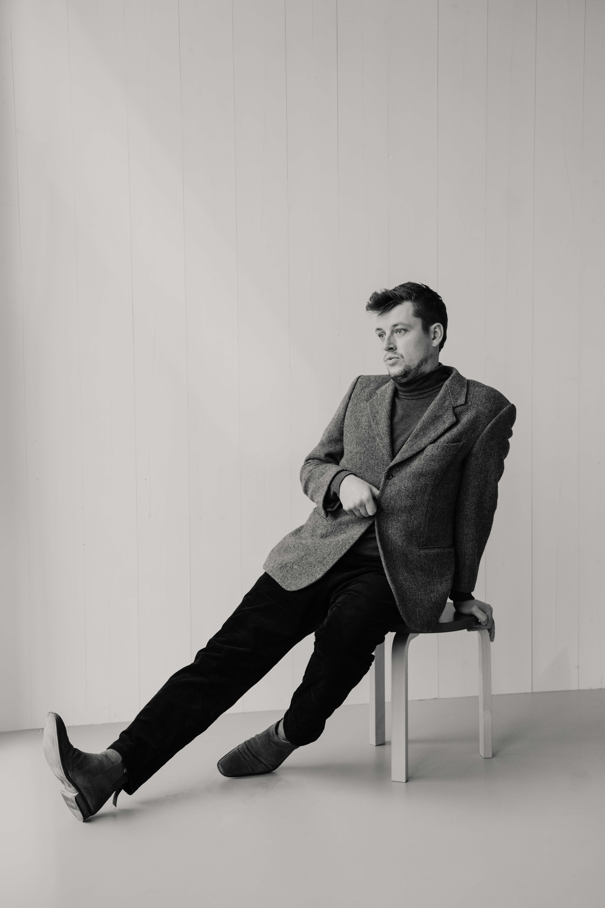
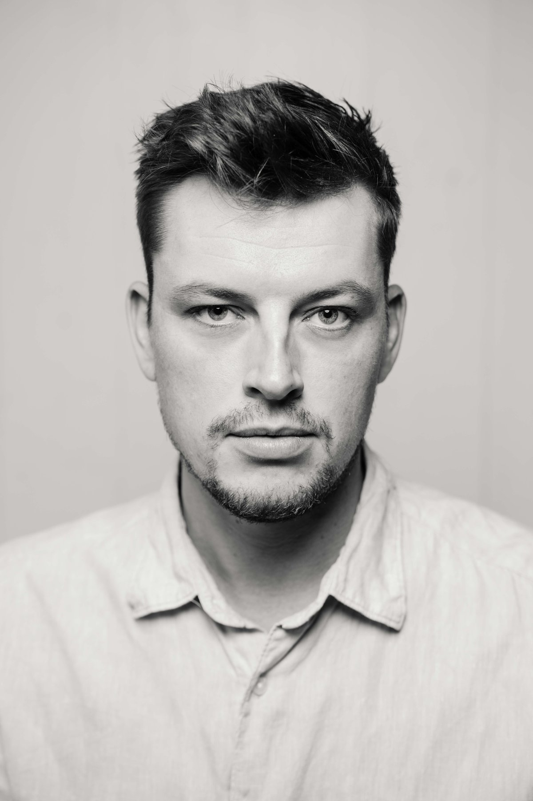
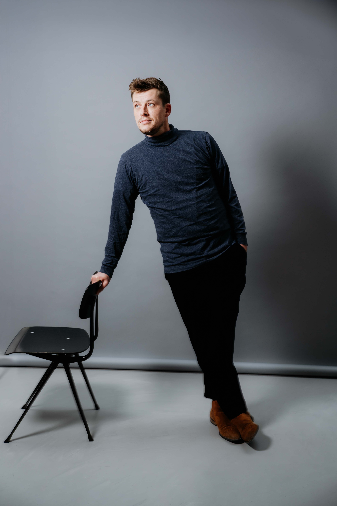
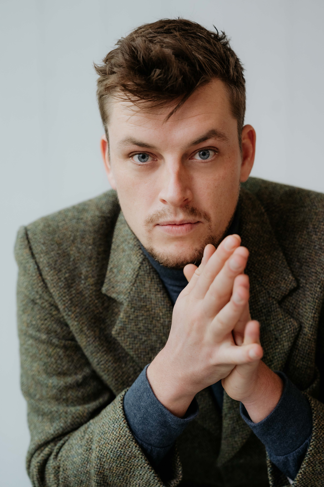
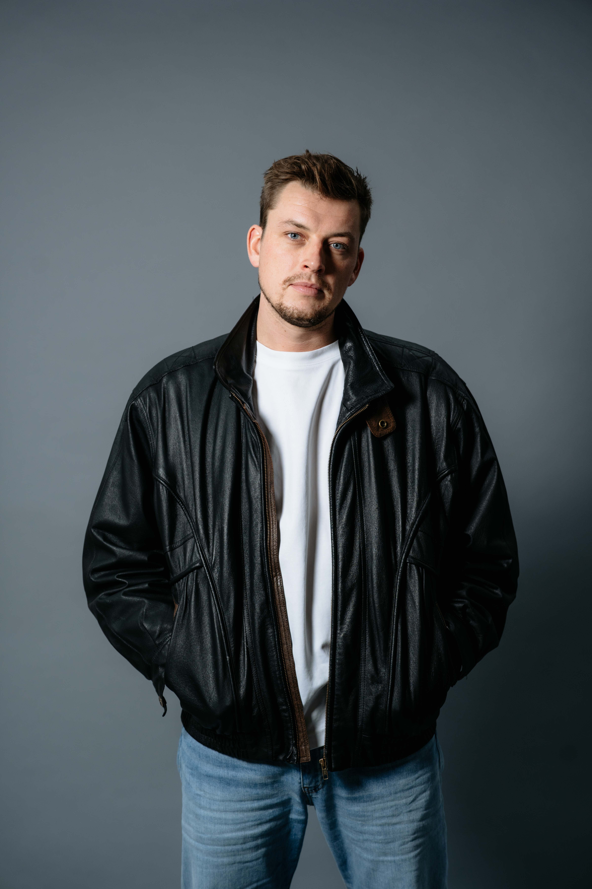
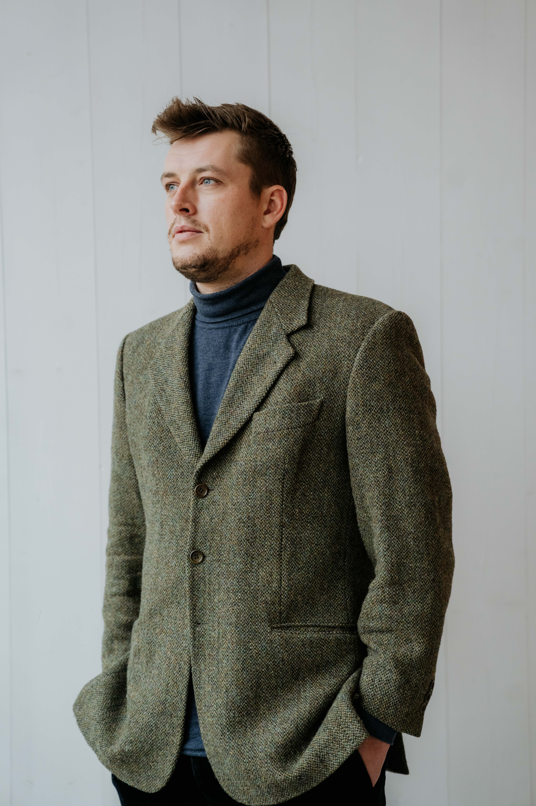
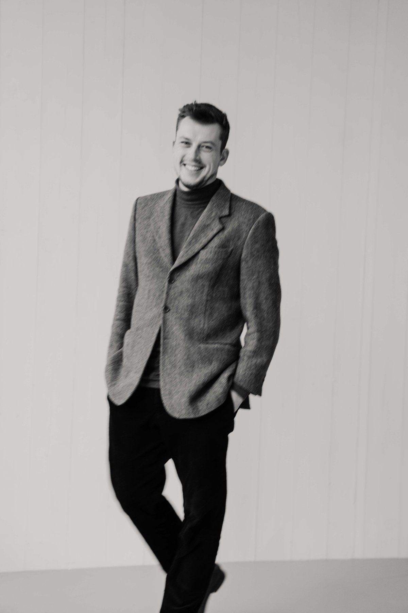
Ik ben een fysieke, energieke acteur met een sterke podiumaanwezigheid en gevoel voor komische timing. Ik speel in uiteenlopende stijlen — van scherp komisch tot rauw emotioneel — en ik doe dat met precisie en spelplezier. Muzikaliteit zit in alles wat ik maak. Boven alles wil ik vertellen. Op het podium, voor de camera of jouw boodschap op maat. Ik geloof dat kunst mensen kan raken en bewegen. Ontvlammen. Daar moet het over gaan.
Met Theatergroep Wijsmakers maak ik voorstellingen op maat voor bedrijven — teamdagen, relatie-events, jubilea en kick-offs. Theater, muziek en humor, geschreven rond jullie verhaal.


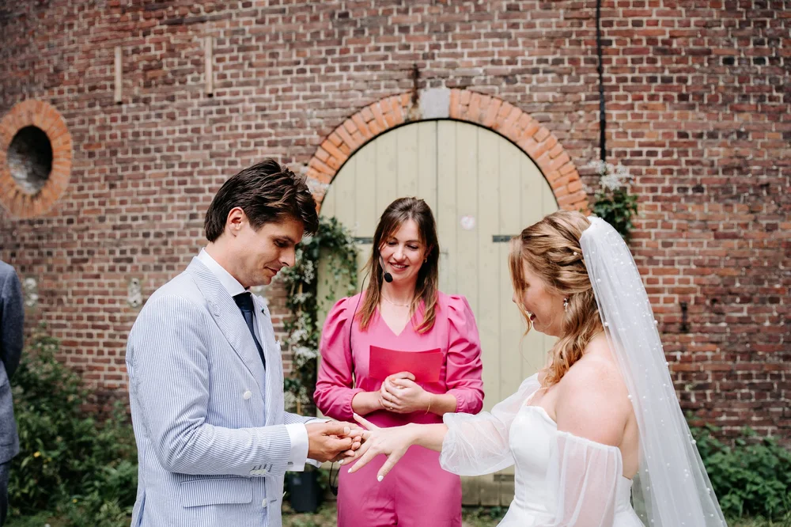


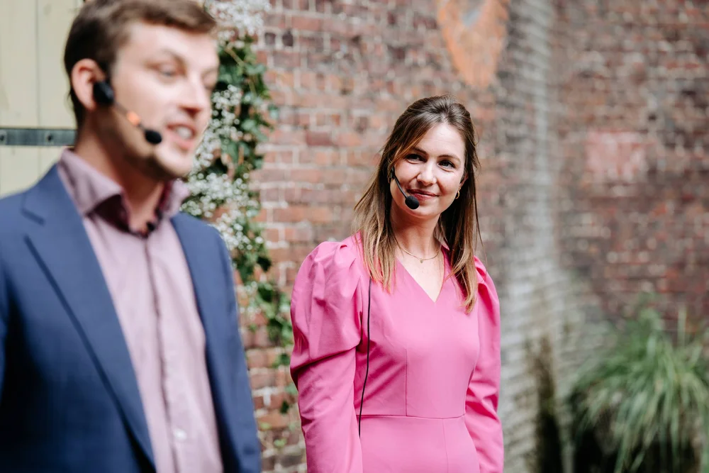

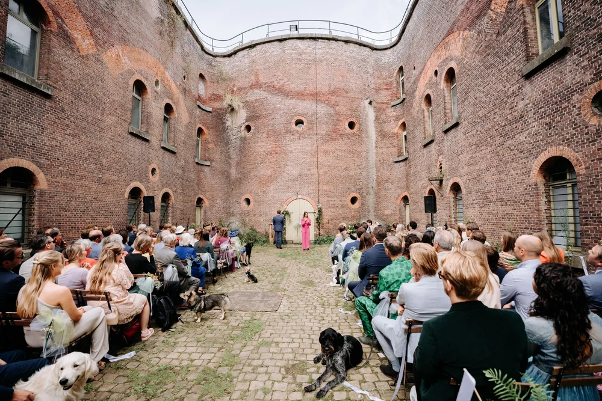
Updates over nieuwe voorstellingen, projecten en wat er speelt. Geen spam — uitschrijven kan altijd.
Transities — groei, overnames, herstructurering.
9+ jaar ervaring
Ex-PwC, ex-VC
MSc Economics & MSc Finance.
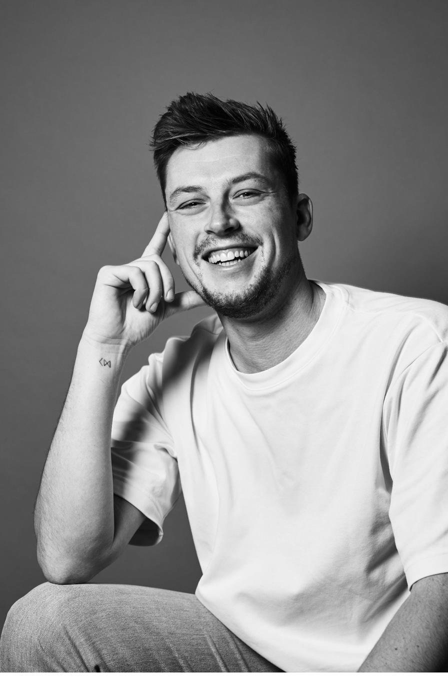
Niet elke onderneming heeft een fulltime CFO nodig — maar wél iemand die de financiële complexiteit doorziet en vertaalt naar heldere keuzes. Ik werk met ondernemers op de momenten die ertoe doen: groei financieren, een overname structureren, of de organisatie klaarstomen voor de volgende fase.
Met een achtergrond in Big Four en venture capital weet ik wat er op het spel staat.
Financieel leiderschap op flexibele basis. Budgettering, forecasting, rapportage en sparring op directieniveau.
Begeleiding bij overnames, fusies en desinvesteringen. Van due diligence tot closing.
Business cases bouwen, investeerders aanspreken, financieringsstructuren opzetten.
Een goed geïnformeerde stakeholder is een betrokken stakeholder. Met mijn VC-achtergrond weet ik wat zij nodig hebben.
Financiële reorganisatie, kostenoptimalisatie en operationele verbeteringen doorvoeren.
Voortgang bijhouden, uitkomsten evalueren, strategie bijsturen.
Goede financiële beslissingen beginnen niet met een spreadsheet. Ze beginnen met een verhaal dat klopt.
Mijn achtergrond als acteur maakt me een betere financiële professional — omdat ik weet hoe je complexe data vertaalt naar iets waar mensen op kunnen acteren. Een business case die begrepen wordt. Een strategie die gedragen wordt. Dat is het verschil tussen een advies dat in een la verdwijnt en een traject dat iets in beweging zet en houdt.
Ik ben datagedreven, schakel snel en breng waar nodig specialisten uit mijn netwerk in. De lijnen blijven kort.
Cijfers bewegen mensen niet. Context wel.